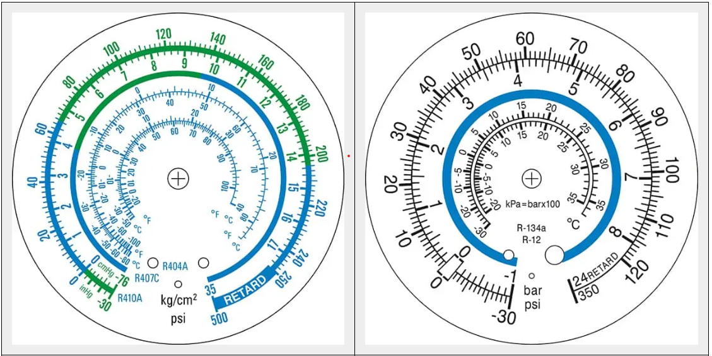

LPP Jacques RaynaudFilière Énergétique · CAP IFCA
Exercice rapide — Lecture manomètres + Surchauffe / Sous-refroidissementSurchauffe = T bulbe − T0 · Sous-refroidissement = TK − T sortie condenseur
Durée : 1 hPréparation EP3 Bloc B
Niveau CAP IFCA 2
Niveau CAP IFCA 2
NOM — Prénom
Binôme (ou seul)
Classe
CAP IFCA 2
Note / 20
Rappel express — les 2 formules à connaître par cœur
SURCHAUFFE = T bulbe (TSe) − T0
SOUS-REFROIDISSEMENT = TK − T sortie condenseur (TScd)
T0 = température d'évaporation, je la lis sur le manomètre BP en suivant l'échelle du bon fluide ·
TK = température de condensation, je la lis sur le manomètre HP idem ·
TSe = température au bulbe (sortie évaporateur) — relevée au thermomètre de contact ·
TScd = température sortie condenseur — relevée au thermomètre de contact.
CAS 1 — Climatisation appartement · « Famille Martin »
R-134a
Tu es appelé pour un contrôle de mise en service d'une climatisation chez la famille Martin. Installation au R-134a. Tu poses le manifold, tu attends 10 min de stabilisation et tu prends une photo des manomètres ci-dessous (vue technicien).

À gauche : manomètre BP · À droite : manomètre HP · Lecture pression sur l'échelle externe noire (bar) · Échelles intérieures bleue/rouge = T° pour R-134a / R-1234yf · La zone verte indique la plage de fonctionnement normal.
✎ 1. Lecture des manomètres (relève la pression et déduis la température sur l'échelle R-134a)
| P0 — Manomètre BP | T0 (°C — échelle R-134a sur cadran BP) | PK — Manomètre HP | TK (°C — échelle R-134a sur cadran HP) |
|---|---|---|---|
Astuce : est-ce que les aiguilles sont dans la zone verte ? Si oui = fonctionnement normal annoncé.
Données fournies — Températures relevées au thermomètre de contact
| TSe (T° au bulbe / sortie évaporateur) | +15 °C | TScd (T° sortie condenseur) | +12 °C |
| T air ambiant intérieur | +24 °C | T air extérieur (au condenseur) | +30 °C |
✎ 2. Calculs Surchauffe et Sous-refroidissement (en kelvin · attention aux signes)
| Formule | Détail du calcul | Résultat (K) |
|---|---|---|
| SURCHAUFFE = TSe − T0 | ||
| SOUS-REFROIDISSEMENT = TK − TScd |
✎ 3. Interprétation — l'installation est-elle saine ?
Repères : Surchauffe 5-10 K · Sous-refroidissement 3-8 K · La zone verte du manomètre confirme-t-elle ton diagnostic ?
CAS 2 — Vitrine à pâtisserie · « Le Sucre Doux »
R-134a
Le client se plaint que sa vitrine pâtisserie ne tient plus la température en fin de matinée. Installation au R-134a. Tu poses le manifold (style Blondelle multi-fluides) et tu lis les manomètres ci-dessous.

À gauche : manomètre BP · À droite : manomètre HP · Cadrans Blondelle multi-fluides · Lecture pression sur l'échelle bar · Choisis l'échelle de température correspondant au R-134a (couleur verte sur les cadrans Blondelle).
✎ 1. Lecture des manomètres
| P0 — Manomètre BP | T0 (°C — échelle R-134a verte) | PK — Manomètre HP | TK (°C — échelle R-134a verte) |
|---|---|---|---|
Données fournies — Températures relevées au thermomètre de contact
| TSe (T° au bulbe / sortie évaporateur) | −2 °C | TScd (T° sortie condenseur) | +45 °C |
| T air ambiant magasin | +22 °C | TSC (sortie compresseur, info) | +85 °C |
✎ 2. Calculs Surchauffe et Sous-refroidissement
| Formule | Détail du calcul | Résultat (K) |
|---|---|---|
| SURCHAUFFE = TSe − T0 | ||
| SOUS-REFROIDISSEMENT = TK − TScd |
✎ 3. Interprétation — l'installation est-elle saine ? Quelle anomalie ?
Repères : Surchauffe 5-10 K · Sous-refroidissement 3-8 K · Pourquoi le client a-t-il un problème ? Que faire ?
📋 Aide-mémoire — Table P/T R-134a (à arrondir, pression rosée bar relatif)
| T° (°C) | −40 | −20 | −10 | 0 | +5 | +10 | +15 | +20 | +30 | +40 | +50 |
|---|---|---|---|---|---|---|---|---|---|---|---|
| R-134a | −0,5 b | 0,3 b | 1,0 b | 1,9 b | 2,5 b | 3,1 b | 3,9 b | 4,7 b | 6,7 b | 9,2 b | 12,3 b |
Pour vérifier la lecture de tes manomètres si la T° n'est pas claire sur le cadran.
Auto-évaluation — je coche
☐ J'ai lu correctement les 4 valeurs (PK, TK, P0, T0)
☐ J'ai vérifié si les aiguilles sont dans la zone verte
☐ J'ai appliqué les 2 formules sans erreur
☐ J'ai noté les unités (K)
☐ J'ai posé un diagnostic argumenté pour chaque cas
☐ J'ai vérifié si les aiguilles sont dans la zone verte
☐ J'ai appliqué les 2 formules sans erreur
☐ J'ai noté les unités (K)
☐ J'ai posé un diagnostic argumenté pour chaque cas
Note enseignant
Lectures manomètres (4 pts) : ____ / 4
Calculs cas 1 (3 pts) : ____ / 3
Diagnostic cas 1 (3 pts) : ____ / 3
Calculs cas 2 (3 pts) : ____ / 3
Diagnostic cas 2 (3 pts) : ____ / 3
Soin · unités · présentation (4 pts) : ____ / 4
TOTAL : ____ / 20
Calculs cas 1 (3 pts) : ____ / 3
Diagnostic cas 1 (3 pts) : ____ / 3
Calculs cas 2 (3 pts) : ____ / 3
Diagnostic cas 2 (3 pts) : ____ / 3
Soin · unités · présentation (4 pts) : ____ / 4
TOTAL : ____ / 20